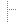
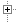
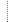

RTAI API
Main Page
File List
base/arch/i386/calibration/calibrate.h
base/config/kconfig/expr.h
base/config/kconfig/lkc.h
base/config/kconfig/lkc_proto.h
base/config/kconfig/qconf.h
base/config/kconfig/lxdialog/colors.h
base/config/kconfig/lxdialog/dialog.h
base/include/rtai.h
base/include/rtai_bits.h
base/include/rtai_leds.h
base/include/rtai_malloc.h
base/include/rtai_math.h
base/include/rtai_mq.h
base/include/rtai_msg.h
base/include/rtai_names.h
base/include/rtai_netrpc.h
base/include/rtai_posix.h
base/include/rtai_proc_fs.h
base/include/rtai_proxies.h
base/include/rtai_rwl.h
base/include/rtai_sanity.h
base/include/rtai_sched.h
base/include/rtai_schedcore.h
base/include/rtai_spl.h
base/include/rtai_tbx.h
base/include/rtai_trace.h
base/include/rtai_types.h
base/include/rtai_usi.h
base/include/rtai_version.h
base/include/rtai_wd.h
base/include/rtai_wrappers.h
base/include/asm-arm/rtai.h
base/include/asm-arm/rtai_atomic.h
base/include/asm-arm/rtai_debug.h
base/include/asm-arm/rtai_fpu.h
base/include/asm-arm/rtai_irqops.h
base/include/asm-arm/rtai_lxrt.h
base/include/asm-arm/rtai_sched.h
base/include/asm-arm/rtai_shm.h
base/include/asm-arm/rtai_srq.h
base/include/asm-arm/rtai_vectors.h
base/include/asm-arm/arch-clps711x/rtai_arch.h
base/include/asm-arm/arch-clps711x/rtai_exports.h
base/include/asm-arm/arch-clps711x/rtai_timer.h
base/include/asm-arm/arch-pxa/rtai_arch.h
base/include/asm-arm/arch-pxa/rtai_exports.h
base/include/asm-arm/arch-pxa/rtai_timer.h
base/include/asm-arm/arch-sa1100/rtai_arch.h
base/include/asm-arm/arch-sa1100/rtai_exports.h
base/include/asm-arm/arch-sa1100/rtai_timer.h
base/include/asm-i386/rtai.h
base/include/asm-i386/rtai_atomic.h
base/include/asm-i386/rtai_emulate_tsc.h
base/include/asm-i386/rtai_fpu.h
base/include/asm-i386/rtai_hal.h
base/include/asm-i386/rtai_leds.h
base/include/asm-i386/rtai_lxrt.h
base/include/asm-i386/rtai_oldnames.h
base/include/asm-i386/rtai_sched.h
base/include/asm-i386/rtai_shm.h
base/include/asm-i386/rtai_srq.h
base/include/asm-i386/rtai_vectors.h
base/include/asm-ppc/rtai.h
base/include/asm-ppc/rtai_atomic.h
base/include/asm-ppc/rtai_fpu.h
base/include/asm-ppc/rtai_hal.h
base/include/asm-ppc/rtai_legacy.h
base/include/asm-ppc/rtai_lxrt.h
base/include/asm-ppc/rtai_oldnames.h
base/include/asm-ppc/rtai_sched.h
base/include/asm-ppc/rtai_shm.h
base/include/asm-ppc/rtai_srq.h
base/include/asm-ppc/rtai_vectors.h
base/ipc/netrpc/rtnetP.h
base/math/fpP.h
base/math/mathP.h